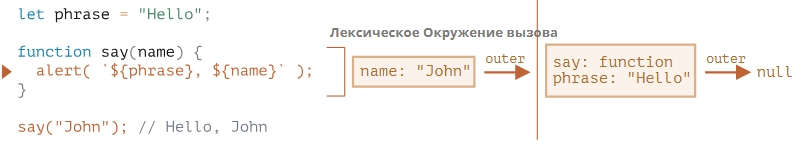

Поскольку js язык с сильным функциональным уклонном, функции это объекты которые могут быть: переданы как аргументы, присвоены другим переменным. В разделе речь пойдёт о доступе функции к окружению.
Если переменная объявлена внутри какого-либо блока: {}, ветвления или цикла, она будет видна только в этом блоке кода.
Функция называется «вложенной», когда она создаётся внутри другой функции.
function sayHiBye(firstName, lastName) {
// функция-помощник, которую мы используем ниже
function getFullName() {
return firstName + " " + lastName;
}
alert( "Hello, " + getFullName() );
alert( "Bye, " + getFullName() );
}
Далее автор как дебил начинает стенать, а чтоже будет в этом случае, да я хуй знает, можно же сразу объяснить,
что такое функциональный объект и не ебать людям голову, но нет.
function makeCounter() {
let count = 0;
return function() {
return ++count; // есть доступ к внешней переменной "count"
};
}
let count1 = makeCounter();
let count2 = makeCounter();
console.log(`1:${count1()},2:${count2()}`)
В JavaScript у каждой выполняемой функции, блока кода {...} и скрипта есть связанный с ними внутренний (скрытый) объект, называемый лексическим окружением LexicalEnvironment.
Объект лексического окружения состоит из двух частей:
Далее идут мутные рисунки, из которых по смыслу вроде как понятно, что в файле при объявлении переменной создаётся внутрений контекст и нулевой контекст внешний.
Автор поясняет, что при инициализации переменной сначала ей присваивается undefined, а уже потом инициализационное значение, если оно есть.
Далее поясняется что с лексическим окружением нельзя взаимодействовать напрямую, это прерогатива движка JavaScript
В отличии от переменной ф-ция инициализируется сразу полностью.
Конечно, такое поведение касается только Function Declaration, а не Function Expression, в которых мы присваиваем функцию переменной, например, let say = function(name) {...}.

Когда код хочет получить доступ к переменной – сначала происходит поиск во внутреннем
лексическом окружении, затем во внешнем, затем в следующем и так далее, до глобального.
Если переменная не была найдена, это будет ошибкой в строгом режиме (use strict). Без строгого режима, для обратной совместимости, присваивание несуществующей переменной создаёт новую глобальную переменную с таким же именем.
Если в процессе выполнения использована внешняя переменная, то она обновляется в этом внешнем окружении
Замыкание – это функция, которая запоминает свои внешние переменные и может получить к ним доступ. В некоторых языках это невозможно, или функция должна быть написана специальным образом, чтобы получилось замыкание. Но, как было описано выше, в JavaScript, все функции изначально являются замыканиями (есть только одно исключение, про которое будет рассказано в Синтаксис "new Function").
То есть они автоматически запоминают, где были созданы, с помощью скрытого свойства [[Environment]], и все они могут получить доступ к внешним переменным.
Когда на собеседовании фронтенд-разработчику задают вопрос: «что такое замыкание?», – правильным ответом будет определение замыкания и объяснения того факта, что все функции в JavaScript являются замыканиями, и, может быть, несколько слов о технических деталях: свойстве [[Environment]] и о том, как работает лексическое окружение.
Лексическое окружение хранится до тех пор пока существует ф-ция которая на него ссылается
Далее идёт мутный пример, что пока существует переменная которой присвоена ф-ция, то окружение остаётся активным, проще проиллюстрировать это:
let ex = 100
function f() {
let value = ex*Math.random();
return function () { console.log(Math.floor(value)); };
}
// 3 функции в массиве, каждая из которых ссылается на лексическое окружение
// из соответствующего вызова f()
let arr = [f(), f(), f()];
for(let fun of arr) fun();
Но если сделать arr=null то массив исчезнет из памяти, а переменная исчезнет из памяти когда интерпритатор
закончит выполнять скрипт и если на эту переменную никто не будет ссылаться.
Однако это не всегда так. Если переменная объявлена и не используется, то интерпритатор ряда браузеров и похожее ноды, просто выкидывает её:
function f() {
let value = Math.random();
function g() {
debugger; // в консоли: напишите alert(value); Такой переменной нет!
}
return g;
}
let g = f();
g();
С этим может быть связан один неприятный сюрприз:
let value = "Сюрприз!";
function f() {
let value = "ближайшее значение";
function g() {
debugger; // в консоли: напишите alert(value); Сюрприз!
}
return g;
}
let g = f();
g();
Хотя тут у меня edge не хочет витдеть ни одну из этих переменных. Нода видит лишь глобальную переменную.
Задача какой-то там номер:
Как написать следующее:
sum(1)(2) = 3
sum(5)(-1) = 4
Ответ:
function sum(a) {
return function(b) {
return a + b; // берёт "a" из внешнего лексического окружения
};
}
Низа что не догадаешься.
Задача 8 вцелом решено так же как у автора, во второй ф-ции я не знал что у arr есть проверка на наличие.
Суть изначальной проблемы была:
function byField(field) {
const sym = Symbol(field)
return function(a, b){
return a[sym] > b[sym] ? 1 : -1
}
}
В создании символа и попытке сравнения по этому созданному полю. С undefined. Все поля имеют разные
модификаторы, даже если их имена одинаковые.
Потом я решил задачу таким способом:
function byField(field) {
return function(a, b){
const desA = Object.getOwnPropertyDescriptor(a, field)
const desB = Object.getOwnPropertyDescriptor(b, field)
return desA.value > desB.value ? 1 : -1
}
}
Задача решена но путём создания двух лишних объектов. И только пообщавшись с дипсиком я понял свою проблему и сделал окончательный вариант:
function byField(field) {
return function(a, b){
return a[field] > b[field] ? 1 : -1
}
}
Объекты в JavaScript удивительны.
Задача 10 не решена самостоятельно, не хватило понимания поднять переменную выше создаваемой ф-ции